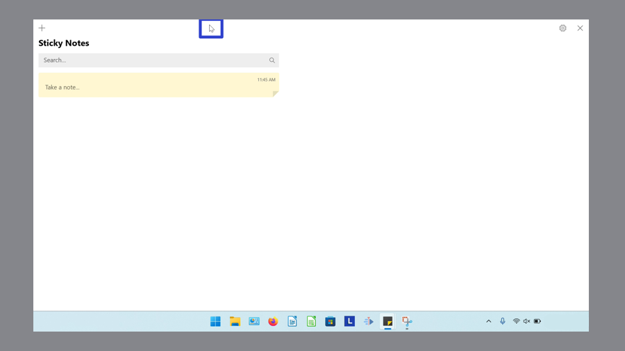
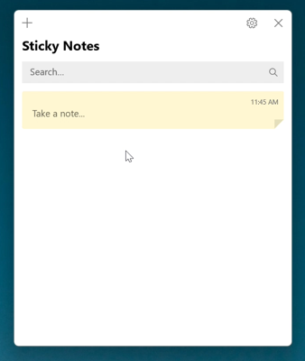
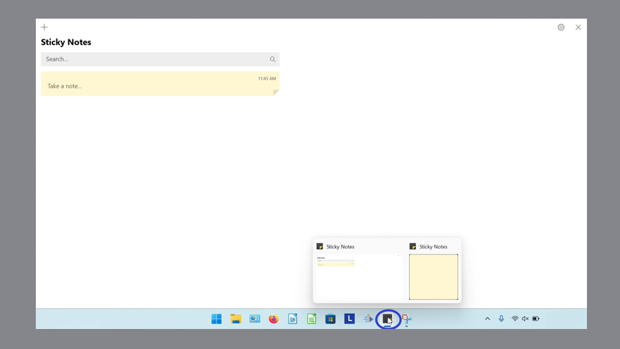
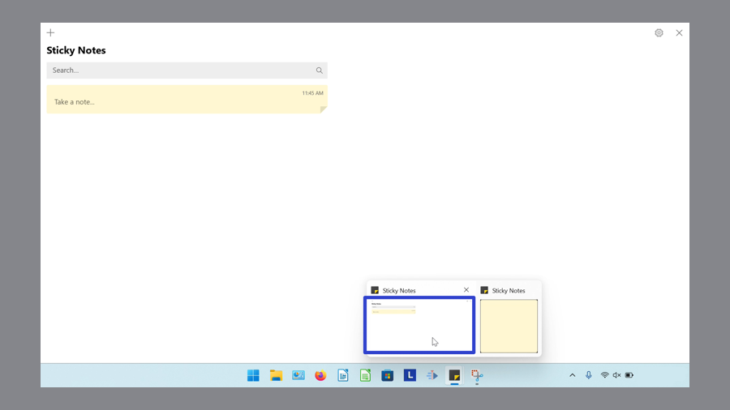
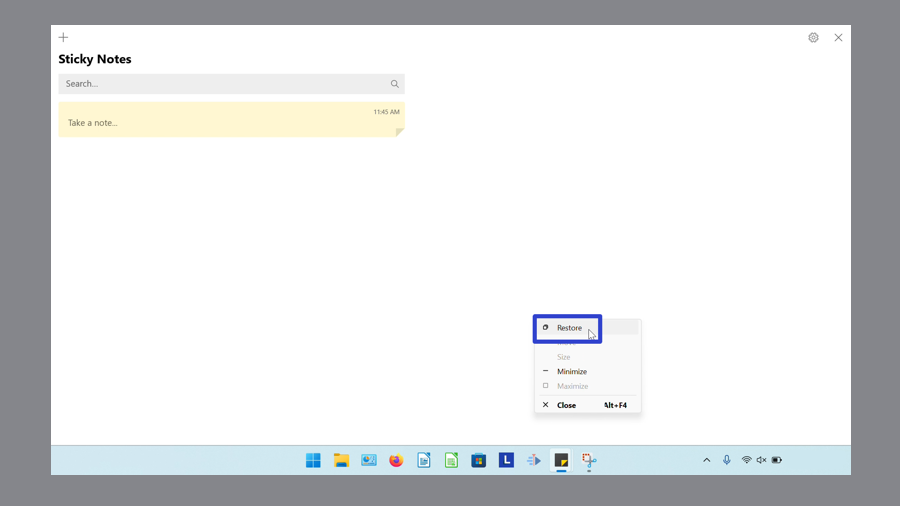
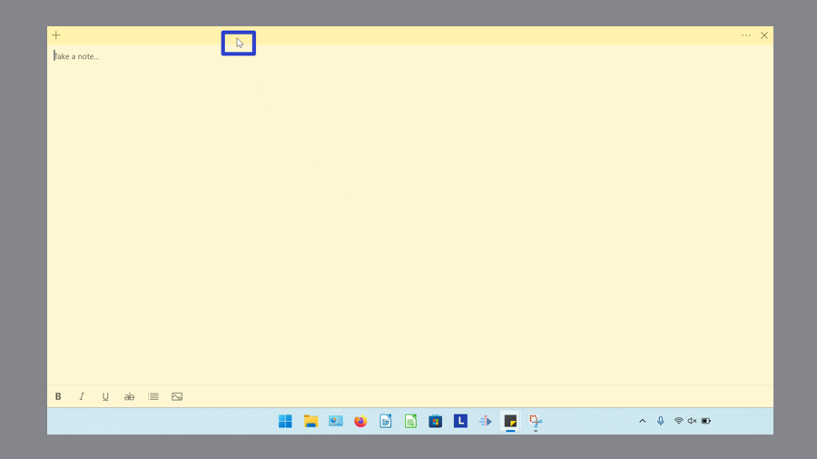
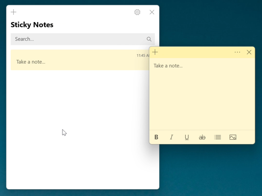
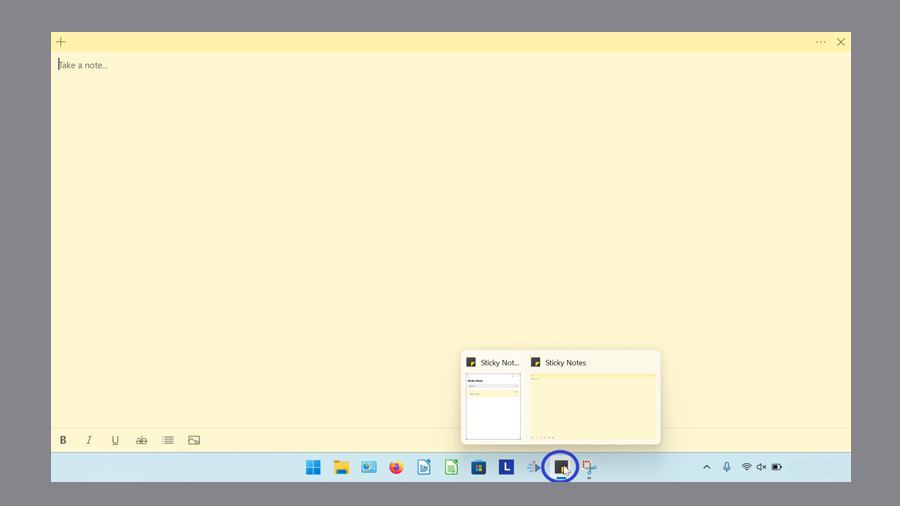
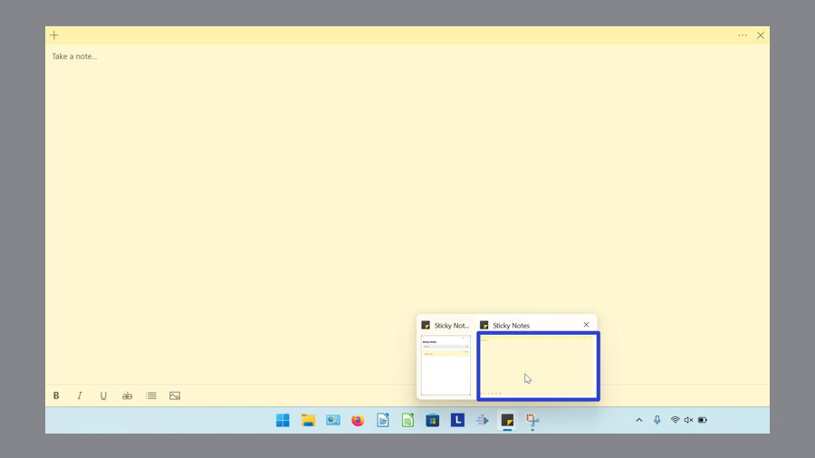
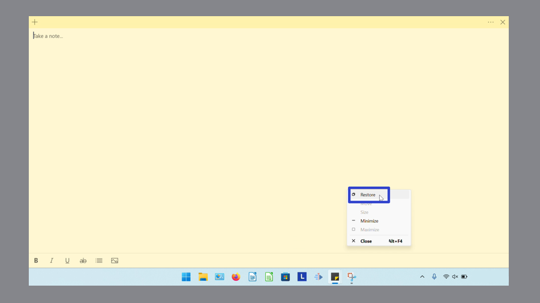

How to Restore the Microsoft Sticky Notes App (Windows 11)
This tutorial covers:
How to Restore the Notes List:
How to Restore a Sticky Note:
No time to scroll down? Click through this tutorial presentation:
Watch a tutorial video:
How to Restore the Notes List With Double Click
- Step 1: First maximize the Notes List. Double click the top of the maximized Notes List. 
- The Notes List is restored to its original size before being maximized. 
How to Restore the Notes List With Menu
- Step 1: Maximize the Notes List. Go down to the taskbar and hover the mouse over the Sticky Notes app icon. 
- Step 2: Two small windows appear; one is the Notes List and the other is the sticky note. Right click the small Notes List window. 
- Step 3: In the menu that opens, click “Restore”. 
- The Notes List is restored to its original size before being maximized.
How to Restore a Sticky Note With Double Click
- Step 1: First maximize a sticky note. Double click the top of the sticky note.
- The sticky note is restored to its original size before being maximized. 
How to Restore a Sticky Note With Menu
- Step 1: Maximize a sticky note. Go down to the taskbar and hover the mouse over the Sticky Notes app icon. 
- Step 2: Two small windows appear; one is the Notes List and the other is the sticky note. Right click the small sticky note window. 
- Step 3: In the menu that opens, click “Restore”. 
- The sticky note is restored to its original size before being maximized.
Save a copy of these instructions with this free PDF tutorial.